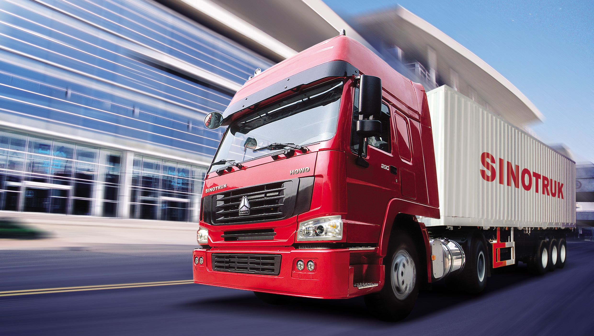

Грузоперевозки в Минске
ПеревеземГруз - перевозчик, которому доверяют тысячи
Наша компания осуществляет грузовые перевозки по городу Минску и за его пределами.
Услуги нашей компании:
- Мебельная перевозка в Минске – вывоз старых конструкций, а также помощь в офисном и квартирном переезде. У нас вы можете заказать услугу профессионального монтажа и демонтажа, а также упаковку любых изделий
- Переезд в Минске – офис, дача, квартира. Мы осуществляем полноценный переезд под ключ, освобождая клиентов от всех хлопот и проблем, связанных с перевозками. Мы аккуратно и быстро перевезем всю мебель, хрупкие и бьющиеся предметы, технику, так же осуществляя после уборку помещений
- Быстрая и безопасная перевозка предметов быта – домашних принадлежностей, бытовой техники, компьютерной и цифровой техники, специализированных инструментов, например, музыкальных, а также домашнего оборудования
- Грузоперевозки по Минску и Беларуси любого размера и веса – тоннаж до 3 т, объемные размеры – до 20 м3
- Организация перевозок строительных материалов, а также отделочных изделий при максимальной длине в 6 метров
- Осуществляем перевозку коммерческих товаров и продукции – на таможню, в складские помещения, перевозка продукции по торговым точкам
- Вывоз строительного мусора

Преимущества сотрудничества с нами:
В нашей компании есть все, что вам нужно для быстрой и успешной транспортировки любого типа груза. У нас работают профессиональные грузчики, а также в обиходе имеется все необходимое оборудование для осуществления погрузочно-разгрузочных и транспортировочных работ.
- Мы гарантируем быстроту при выполнении каждого заказа, точно укладываясь в оговоренные сроки
- Предоставляем гарантии сохранности и целостности перевозимых мебельных конструкций и другого габаритного имущества
- В нашем распоряжении имеется собственный автопарк и техническая база
- Мы предлагаем конкурентные и весьма выгодные цены на все услуги